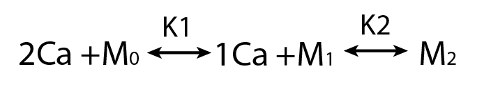

Modeling molecules
Bayesian approaches to understanding protein biophysics
Keegan Hines, Tom Middendorf, Rick Aldrich
Proteins
- Fundamental unit of computation and signal processing in biological systems
- Fold into complex structures which determine their function
Proteins
- Proteins are dynamic, exploring very many conformational states.
- What can we do to understand these dynamics?
Jensen et al., 2012, Mechanism of Voltage Gating in Potassium Channels, Science , 336, 6078.
Modeling Proteins
Physiological relevance- we only need to account for some of this complexity
Modeling Proteins
Calmodulin
Calmodulin
- A sequential binding model is often used to study CaM
- Current estimates of binding parameters vary wildly
Sequential Binding Model
Large regions of this parameter space can fit any data extremely well
Parameter Identifiability
Parameter Identifiability
Practical Identifiability
Structural Identifiability
Parameters cannot be inferred accurately even with infinite signal-to-noise
Parameter Identifiability
We need a way to efficiently evaluate the full range of parameter space that leads to good agreement with the data
We can check whether our parameter estimates are unique or stretch over a vast range
Bayesian Inference
The posterior distribution quantifies which regions of the parameter space provide a good explanation of the data.
Bayes' rule specifies how to calculate posterior probability, and Markov chain Monte Carlo provides an efficient method to estimate high-dimensional posterior distributions.
Estimate a probability distribution by drawing samples from it. The properties of those samples will approximate the properties of the underlying distribution (if there's a lot of em).
Markov chain Monte Carlo
Estimate a probability distribution by drawing samples from it. The properties of those samples will approximate the properties of the underlying distribution (if there's a lot of em).
Markov chain Monte Carlo
Estimate a probability distribution by drawing samples from it. The properties of those samples will approximate the properties of the underlying distribution (if there's a lot of em).
Additional Applications
Dynamical Systems
Additional Applications
Dynamical Systems
Additional Applications
Dynamical Systems
Additional Applications
Dynamical Systems (Non-Identifiable)
Additional Applications
Dynamical Systems (Non-Identifiable)

Additional Applications
Hidden Markov Models
Model Selection and Experimental Design
Conclusions
- Mechanistic models of proteins systems are important, though merely fitting data to models is insufficient: fits may not be unique
- Non-identifiability is a concern not only for large and complex models, but also for extremely simple 2- and 3-parameter biophysical systems
- New methods are required to determine the accuracy and identifiabilty of nonlinear models
- Bayesian inference (& MCMC) is well suited to provide accurate parameter estimates and a direct assessment of identifiability
- This approach will yield more accurate modeling and will force more innovative experimentation